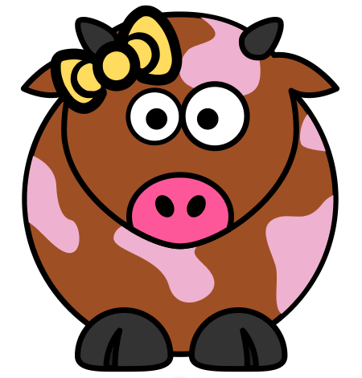

By the way, try tapping anywhere on this colored area.
Working with AI was never this much fun.
This is one of the best projects that I have ever worked on. I will continue supporting this project no matter of competition ends.
YAY... Mass Spectrometry
I was always trying to be away from R. Mostly because I didn't get what it is supposed to do. Thanks FOSSASIA for giving task that made me more confident with R.

Loklak
Imagine if you could store all those wanky tweets from Trump and his Supporters? Just kidding. But that's what loklak helped me to do. But it takes a lot of memory though.
Coala
Coala is great. I was testing it before the GCI. This tool is so going in really great way. I guess it will be primary tool for CI in coming years.
Open Event
I didn't do much tasks related to this, but I can surely tell it is complex. I used the app, and this is going in right way.
Thank you Mentors
Almost all of the mentors have been nice. These are those exact same guys who will make me do tasks even when I am going to give up. Mentor is something I would love to be for FOSSAsia in next GCI.
Credits
I don't want to be a jerk who won't tell you what technologies are used.
Egg.js - up up down down left right left right b a - Konami code (shhhh... easter egg!)